Reframing the first-run experience from a feature tour into a guided first success — so every new user, from a student to a seasoned professional, feels Copilot's value before they're asked to trust it.
The only designer on the project — responsible for every decision, from first sketch to shipped product. No design support, no handoffs to another designer.
Brainstormed on project scope with the PM early, questioning assumptions in the initial spec document to create clarity before any design work began.
Pulled quantitative data and research insights from the PM team and existing studies, grounding every design decision in real user behaviour — not assumptions.
Presented designs at key milestones to senior leadership — gathering feedback, defending rationale, and aligning design with broader product strategy.
Tracked early rollout metrics weekly alongside the PM — using live numbers to validate decisions, surface friction, and inform next iterations.
New users landed in Copilot without understanding what it could do for them. Generic prompts were ignored, failed interactions killed trust fast, and people rarely returned — especially everyday paid users who didn't have a corporate context to lean on when the AI fell short.
"If the first interaction feels useful, users will come back. If it doesn't, they probably won't."
Organic vs Inorganic acquisition across iOS & Android paid segments
Every new user must experience a successful Copilot interaction within their first 7 days
"If the first interaction feels useful, users will come back."
Three key design moves: personalized first prompts, silent progressive setup, and clear exits that respect user control at every step.
Microsoft 365 subscribers got graph-based prompts tied to their actual work — emails, meetings, documents already in their world. Consumer paid users got lightweight, immediately relatable prompts focused on quick wins, not feature showcasing.
Eligibility checks and setup ran silently in the background. Users only entered the chat when Copilot was ready — eliminating confusion during early app moments.
Dismissable at any time, no dead-end flows. Trust earned through design quality — not forced engagement.
Early flows and iterations — working through structure, density and hierarchy before landing on the final direction.
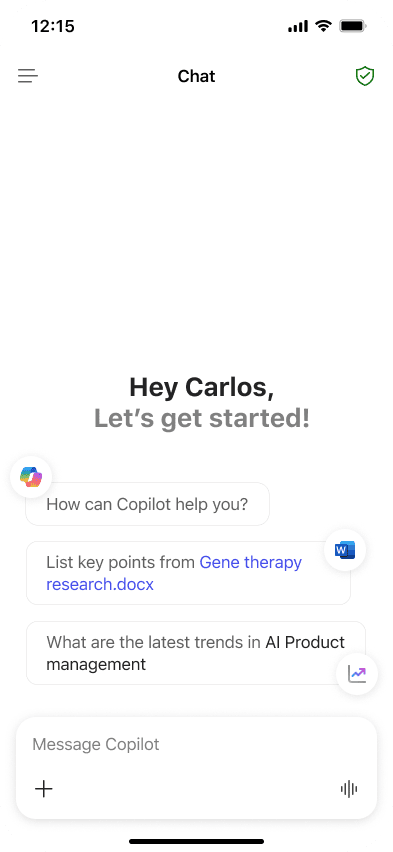
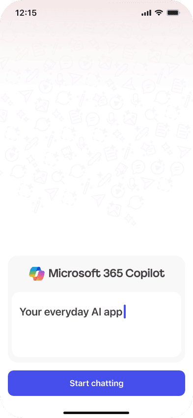
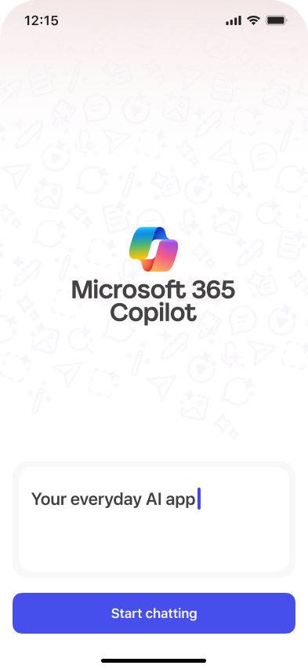
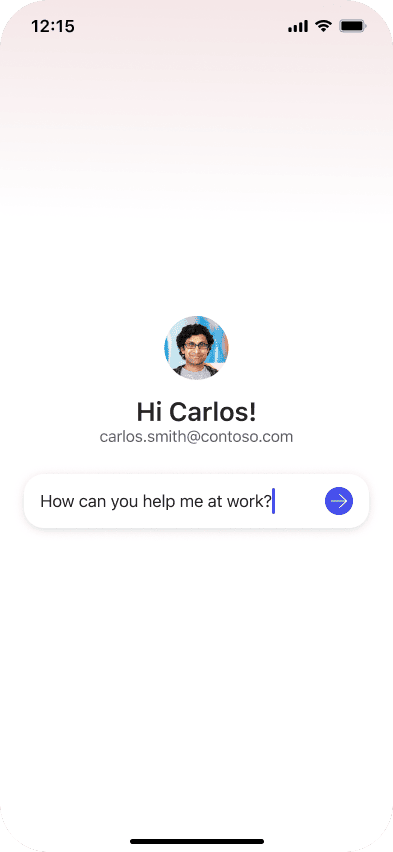
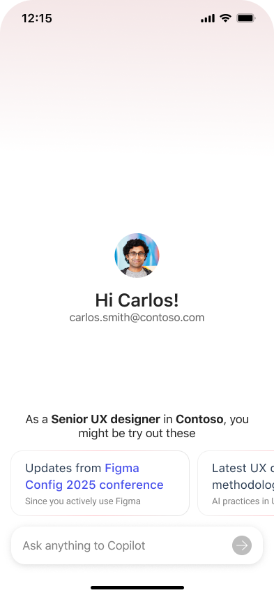
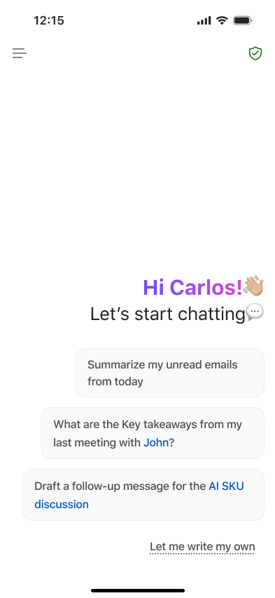
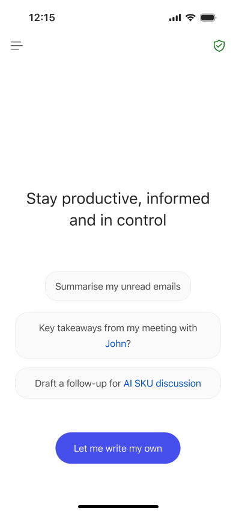
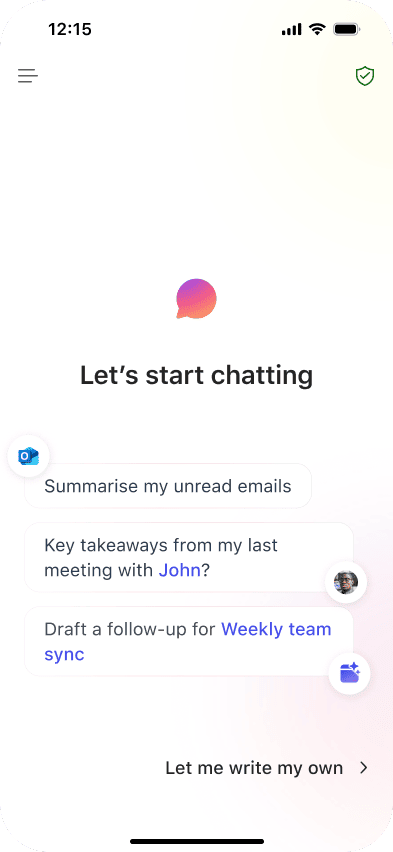
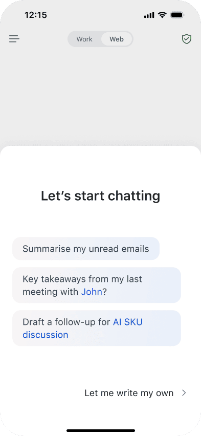
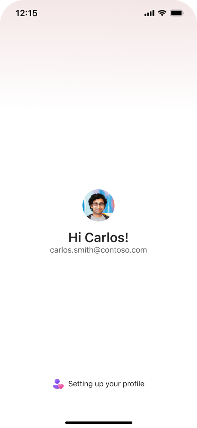
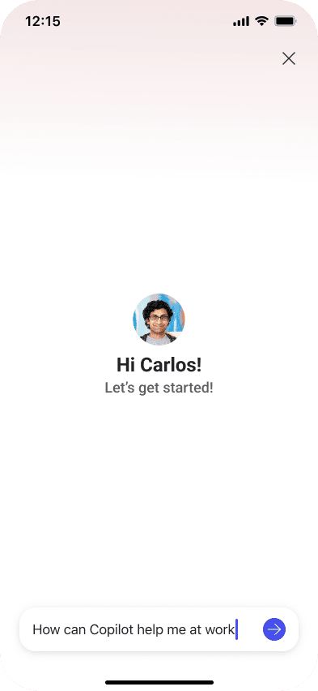
The experience was engineered around three key moments that make the difference between a user who activates and one who drops off. Perceived latency turns a technical wait into a sense of personalisation. The hero prompt is the first real test — pre-filled, contextual, and designed to succeed. The response confirms Copilot understands the user's world, creating immediate confidence.
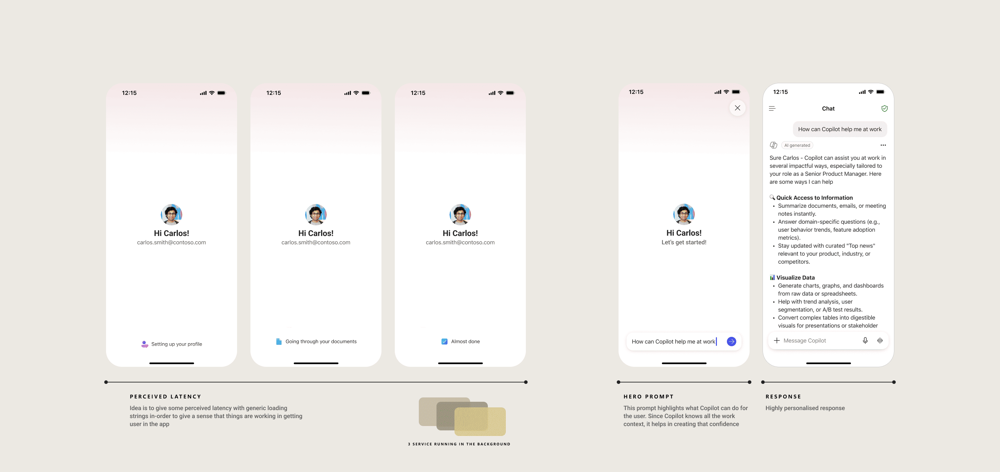
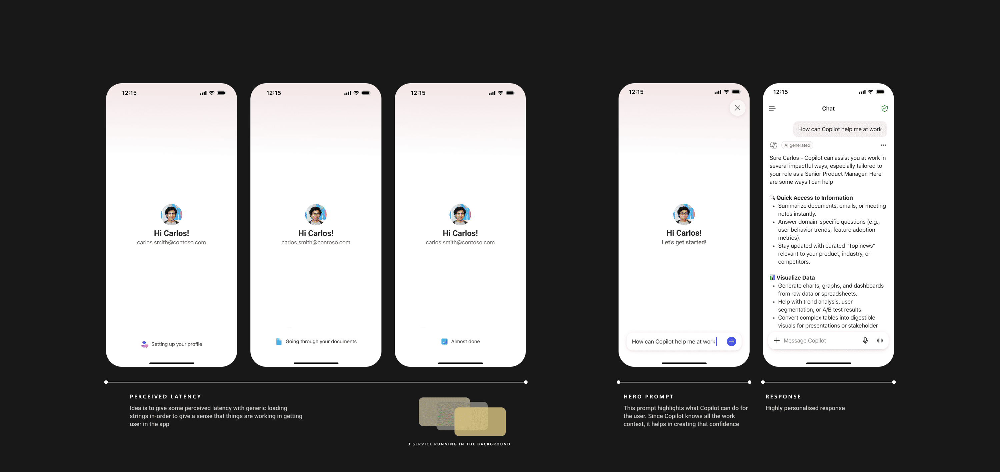